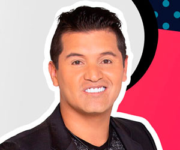

Hassam
Convirtió el humor en su estilo de vida
 @oficialhassam
@oficialhassam Hassam
Hassam Oficial Hassam
Oficial HassamEntre risas Hassam recuerda las primeras veces en que su creatividad le dio un regalo. Durante su infancia el hoy humorista hacia sus propios muñecos, carros preferiblemente, fundiendo plástico y haciendo siluetas en el piso. “Ante la ausencia de muchas cosas, los seres humanos encontramos la creatividad”.
Algunos datos sobre la vida del hombre detrás de Rogelio Pataquiva, Güevardo, Rafaela y Próculo Rico.
LINEA DE TIEMPO
- 2000 Inició con el teatro universitario, estudió Lenguas Modernas.
- 2001 Estuvo en el grupo: Teatro Humor, allí encontró que el teatro puede ser una forma de catarsis social.
- 2003 Se arriesgó y presentó su primera audición en Sábados Felices y después de eso inició a concursar.
- 2005 Tuvo su primer premio y Hassam quedó campeón en Sábados Felices.
- 2008 Fue declarado fuera de concurso ya que ganó 11 programas consecutivos.
- 2009 Lo incorporaron al elenco y al equipo director de las audiciones.
- 2015 Hizo su primera película como Rogelio Pataquiva, “Welcome to Colombia”.
- 2016 Siguió en el cine con “Agente Ñero Ñero 7”.
- 2017 Le dio seguimiento a su segunda película, y un año después estrenó “Agente Ñero Ñero 7 parte 2”.
- 2018 Retomó con “Pa’ las que sea papá” su película más humana y auténtica.
“A reír hoy, porque mañana puede amanecer mueco”
|  |
|---|
{kind=link}
{kind=link}
DATOS CURIOSOS
- Sueña con hacer películas, donde tenga que ver con el guión o la dirección.
- El cariño del público, sus risas y aplausos son para Hassam lo mejor de su carrera.
- Le gustaría experimentar y hacer una película en la que él, sea el villano.
- Su esposa Tatiana y sus dos hijas, Mariana y Juanita son las personas más importantes en su vida.
- Antes de ser humorista tuvo muchos trabajos, uno de ellos fue mensajero en “San Victorino” de Bogotá.
- La compañía de los amantes del humor durante el rodaje de “Pa’ las que sea papá” fue uno de los aspectos que más disfrutó.
Primero, licenciado en Lenguas Modernas, poco después humorista y desde hace tres años actor, Gerly Hassam Gómez Parra, completó quince años llenando de risas a los colombianos, o como diría él: “Haciendo humor, con conciencia social”.
En un sector no muy lejano de la capital del país llamado el 20 de Julio nació Hassam, aquel humorista que todos recordamos por haber ganado 11 veces consecutivas, el programa de humor más importante de la televisión nacional, Hassam reconoce que el presentarse a su primera audición de Sábados Felices marcó un antes y un después en su vida profesional, en su aspecto personal este título se lo lleva el nacimiento de su primera hija Mariana.
Le gustaría cambiar la forma en que el público ve el humor, para él, sería mucho mejor si lo entendieran desde un punto crítico, más allá de entretener, sus rutinas buscan denunciar y crear conciencia. ¿Alguna vez se han preguntado porque el pantalón de Rogelio Pataquiva es de color rosado? Con esta idea de vestuario, Hassam busca decirle no a los estereotipos y llevarle la contraria a quienes dicen: “Los niños de azul y las niñas de rosado”.
Después de ser el protagonista de tres películas, este humorista regresa a las salas de cine del país, este 20 de septiembre con “Pa las que sea papá” película que marca el inicio de un nuevo Rogelio, con esta interpretación Hassam regresa a las raíces de este personaje querido por todos los colombianos. En esta cinta Rogelio es humilde, bastante humano y no se sobre actúa, aquí lo importante es superar todas las adversidades con una sonrisa.
No cabe duda que esta propuesta se va a robar el corazón de todos los espectadores, “Pa las que sea papá” muestra la esencia de los colombianos, lo que somos capaces de hacer con tal de ver realizados nuestros sueños y por supuesto representa el niño interior que llevamos dentro y que a veces olvidamos por estar buscando aquellas cosas básicas que nos pide la vida.
Con la actuación de Hassam como Rogelio Pataquiva, bajo la dirección de Harold Trompetero y el guión de Alejandro Matallana, esta será una película humana y auténtica, una cinta que busca sensibilizar a todos los colombianos. Si usted quiere disfrutar de Rogelio, el amigo, el parcero, el colombiano, el emproblemado no puede perderse “Pa las que sea papá”.